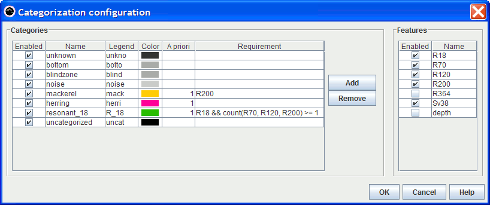
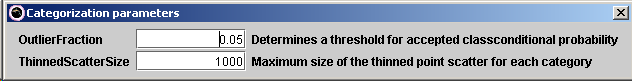
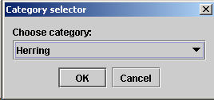
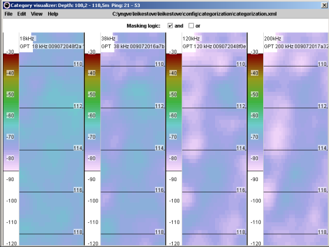
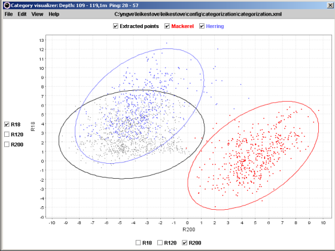
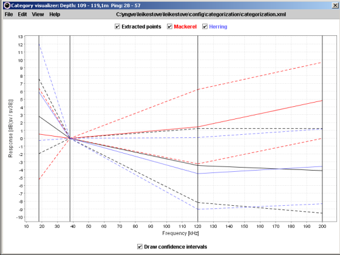
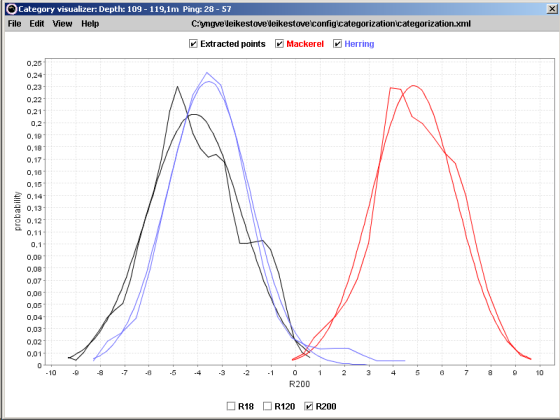
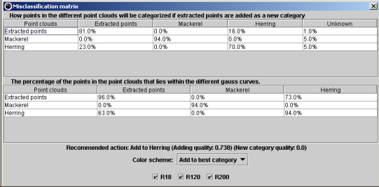

The categorization config file.
Used by the Categorization module.

Here it is possible to define new categories with the Add button, and permanently remove categories with the Remove button.
The features known by the system can also be enabled/disabled though the panel to the right.
For each category, the following parameters can be configured:
R200 is specified for mackerel then 200 kHz must be available for anything to be categorized as mackerel.
If the transducer range for 200 kHz is set to 200 m in
Vertical transducer offsets
then nothing will be categorized as mackerel below 200 m.
R18 && count(R70, R120, R200) >= 1 specifies that 18 kHz must be available together with at least one of 70, 120 and 200 kHz.The Sv a priori is illustrated in the figure below.
The total a priori is calculated as
Total a priori = Overall a priori × School a priori × Geo a priori × Sv a priori.

Parameters used by the categorization system can be set here.

The user can add the extracted points to a category that can be selected from a drop-down list. The category that the system deems to be the best automatically appears at the top of the list, then the second best and so on. For adding points to categories, see also Misclassification matrix.
Through this, you can mark points that meet some criteria. Possible criteria are:
Through this, you can unmark points that meet some criteria. Possible criteria are:
Clears all current markings. Shortcut key: Escape.
Inverts all current markings.
Deletes the marked points. Shortcut key: Delete.
Deletes the unmarked points. Shortcut key: Alt-Delete.
Reads the data from file again so that all modifications before a Save are undone.

Shows the extracted rectangle with a separate colorbar for each frequency.
The points will be masked/unmasked by dragging the colorbars. Points can also
be masked by drawing rectangles directly in the echogram views. Holding
Ctrl enables marking of several rectangles, and holding
Alt unmarks the points inside the drawn rectangle.

Shows a scatter plot of how the points of the categories are distributed in the feature space. A pair of feature axes can be selected by clicking the checkboxes to the left and below the plot. See also category toggles.

Shows the relative frequency response curves for the categories. See also category toggles.
The option 'Draw confidence interval' shows the extent of the category distributions as dashed lines. The position of the dashed lines for a frequency, e.g. 200 kHz, corresponds to the ellipse in the scatter plot projected to the axis of the corresponding feature, e.g. R200. The size of the ellipses and the position of the dashed confidence lines depend on the outlier fraction.

Shows the probability density function for the categories for a selected feature. See also category toggles.

The first table shows how point cloud i, where i
is the row, would be categorized if
the extracted points were added as a NEW category.
The second table shows the overlap between the different point clouds, i.e. the
percentage of the points in category i that lies within the
1 - outlierFraction contour of category j, where
i is the row and j is the column.
This view also gives a recommendation of what can be done with the extracted points.
The user can specify different coloring schemes, depending on whether the user wishes to add the points to an existing category or create a new category. The system will then highlight the problematic values with either yellow or red color depending on the severity of the problem (yellow: somewhat severe, red: more severe).
The user can also turn on/off the enabled features (see Configuration to enable features) by clicking the toggles at the bottom of the view. The results will then be recalculated.
Rescales the plot axes.